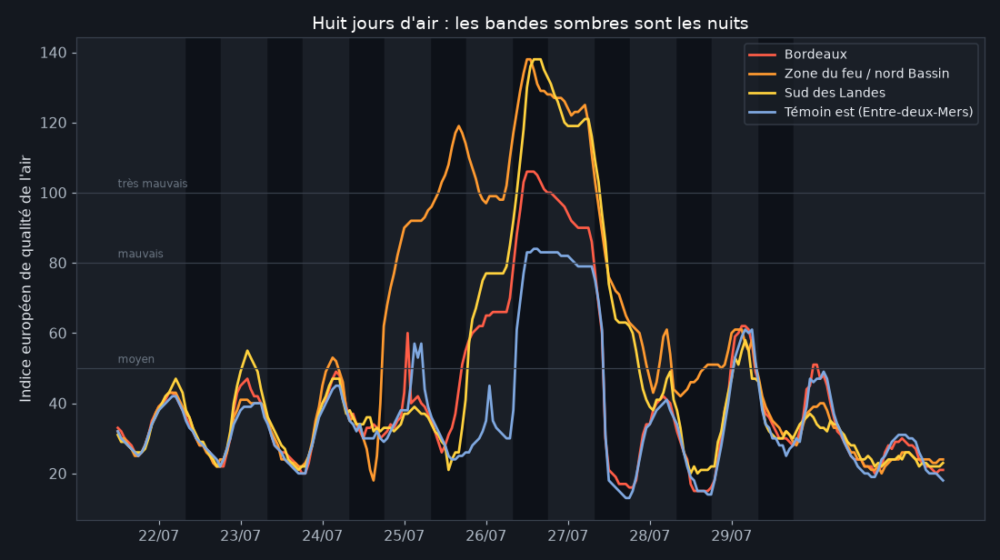
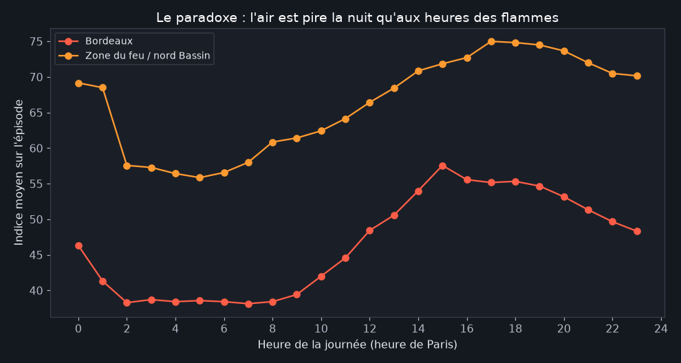
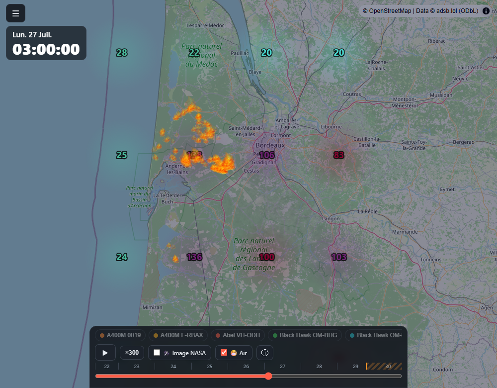
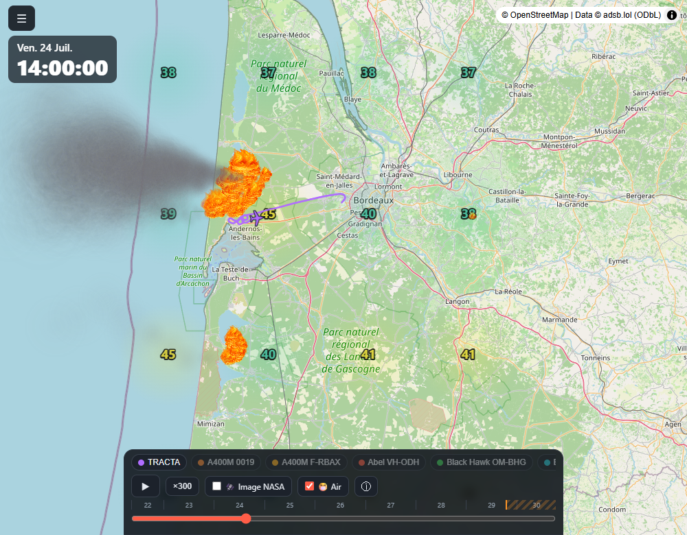
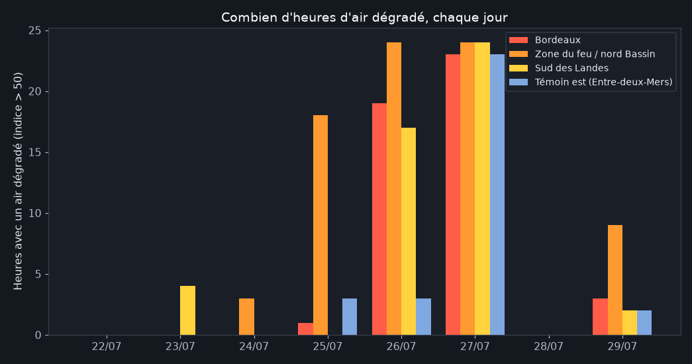

La fumée et l'air qu'on a respiré
Publié le 31 juillet 2026 · Mis à jour le 1er août 2026
Le feu se voit ; la fumée se respire. Pendant huit jours, le panache a promené des centaines de tonnes de particules fines au gré du vent : vers l'océan d'abord, vers Bordeaux ensuite (voir le feu et le vent). L'indice européen de qualité de l'air, modélisé heure par heure par Copernicus, permet de reconstituer qui a respiré quoi, et quand. La découverte principale ne se trouve pas là où on l'attendait : l'air le plus toxique n'était pas aux heures des flammes, mais au cœur de la nuit.
Huit jours d'air, quatre lieux

Deux choses sautent aux yeux. D'abord, les pics se produisent dans les bandes sombres : la nuit. Ensuite, la hiérarchie géographique suit le vent : la zone du feu et le sud des Landes trinquent le plus, Bordeaux est touchée par vagues : quand le vent d'ouest s'y met à partir du 25 : et le témoin de l'Entre-deux-Mers, à 60 km du feu, respire un air presque normal jusqu'à la grande nuit du 26 au 27, où même lui bascule en "mauvais".
Le paradoxe de la nuit

Comment l'air peut-il être pire à 4 h du matin qu'à 16 h, quand le feu est à son maximum ? C'est la mécanique de l'inversion thermique nocturne : le jour, le sol chaud brasse l'atmosphère et dilue la fumée vers le haut ; la nuit, l'air froid plaque tout au sol, sous un couvercle d'air chaud. La fumée produite l'après-midi redescend et stagne dans les premières dizaines de mètres : précisément là où on dort, fenêtres ouvertes, un soir de canicule. C'est une leçon de santé publique connue des spécialistes et invisible du grand public : lors d'un incendie, les heures les plus dangereuses pour les poumons sont souvent celles où l'on ne voit plus les flammes.
La nuit du 26 au 27, sur la carte


Combien d'heures d'air dégradé

Au total sur l'épisode : 99 heures d'air dégradé autour du feu (40 % du temps), 52 heures à Bordeaux dont 7 en "très mauvais", 36 heures même pour le témoin de l'est. Aucun décès ni hospitalisation ne se lit dans ces courbes : mais elles rappellent que l'incendie ne s'arrête pas à la lisière des flammes : son empreinte sanitaire s'étend sur des milliers de km² et des centaines de milliers de personnes.
Méthode et limites
Indice européen de qualité de l'air modélisé par Copernicus CAMS (via l'API Open-Meteo), en quatre points d'une grille de ~40 km, heure par heure, tronqué au dernier relevé observé. La résolution du modèle (~11 km) lisse les pics locaux : au cœur du panache, les concentrations réelles ont pu être bien supérieures aux valeurs affichées : nos chiffres sont donc plutôt des planchers. L'indice agrège plusieurs polluants ; pendant un feu, il est dominé par les particules fines PM2.5. Échelle : 0-20 bon, 50+ dégradé, 80+ mauvais, 100+ très mauvais.
Reproduire : scripts/analyse_air.py du
dépôt ·
chiffres bruts. Sources : Copernicus CAMS / Open-Meteo
(CC BY 4.0), NASA FIRMS, © adsb.lol contributors (ODbL). Analyse produite avec
l'aide de Claude Code.
- 31/07/2026 : première publication.
- 01/08/2026 : recalcul sur l'ensemble des données de production (2,4 millions de lignes, appareils captés automatiquement et journées du 30 juillet au 1er août incluses) ; totaux d'heures réévalués sur la période complète.